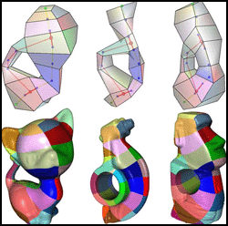

Compatible quadrangulation by Sketching
Chih-Yuan
Yao1, Hung-Kuo Chu1, Tao Ju2, and Tong-Yee Lee1

|
Abstract |
Mesh
quadrangulation has received increasing attention in the past decade. While
previous works have mostly focused on producing a high quality quad mesh of a
single model, the connectivity of the quadrangulation is typically difficult
to control and varies among models even with similar shapes. In this paper,
we propose a novel interactive framework for quadrangulating a set of models
collectively with compatible connectivity. Furthermore, we demonstrate its
application to 3D mesh morphing. In our approach, the user interactively
sketches a skeleton within each model, and our method automatically computes
compatible base domains for all models from these skeletons, on which the
models are parameterized. With this novel parameterization, it is very easy
to generate a pleasing and smooth 3D morphing sequence among these compatible
models. The method yields quadrangulation with comparable quality to existing
approaches, but greatly simplifies compatible re-meshing among a group of
topologically equivalent models, in particular characters and animals models,
with direct applications in shape blending and morphing. |
|
Paper |
|
|
Videos |
|
|
Dataset |
Qaud-dataset
generated by this paper and a morphing execution code to play these quad-meshes |
|
Status |
COMPUTER ANIMATION
AND VIRTUAL WORLDS (2009), Published online in Wiley InterScience (www.interscience.wiley.com) DOI: 10.1002/cav.313 (Proceedings
of CASA'09) |
|
Acknowledgments |
We thank anonymous reviewers’ helpful comments to improve
this paper. This work is supported in part by the Landmark Program of the
NCKU Top University Project (Contract B0008), the National Science Council
(Contracts NSC-97-2628-E-006-125-MY3 and NSC-96-2628-E-006-200-MY3), |